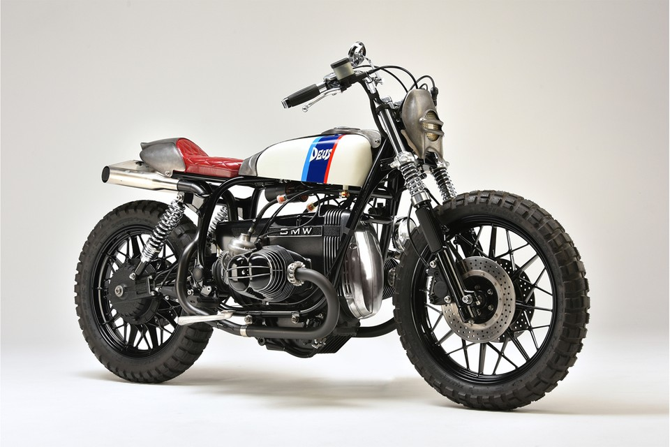

motor baru Deus Ex Machina baru saja meluncur dari bengkel Venice, California. Disebut sebagai Sibling Rivalry,Honda kustom ini adalah variasi performa tinggi dengan tema yang sama: mengubah sepeda enduro legal jalanan menjadi 'super single' yang tangguh. 'Boodaak' (atas dan bawah) dan 'Dakdaak' adalah buatan tangan, pembalap kafe bermesin motorcross yang disetel untuk lintasan dan sepenuhnya mampu bersaing. motor tersebut disetel khusus oleh Jim Wood di Southland Racing Products. Boodaak ditenagai oleh HRC Johnny Campbell spec Honda XR650R motor dengan katup besar dan batang Carrillo, sementara Dakdaak (di bawah) menjalankan motor Honda CRF450X Tahap Dua dengan katup baja tahan karat berukuran dua milimeter untuk umur panjang. Rangka chromoly buatan tangan dan lengan ayun chromoly custom membuat segala sesuatunya bergerak ke arah yang benar, dengan tenaga pengereman serius yang berasal dari rem enam piston Beringer di depan dan Brembo di belakang. Tangki bensin aluminium dibuat dengan tangan, ada percikan bagian Rizoma yang berkelas di seluruh bagiannya, dan jok yang dibuat khusus dibalut dengan kulit Kushitani untuk kenyamanan maksimal di sadel.
Legenda kustomisasi dan modifikasi motor, Deus Ex Machina “berulah” lagi! Kali ini mereka merombak habis sebuah Triumph Bonneville T140!
Bentuk tangki bensin melengkung khas Bonneville T140 yang cenderung kecil bener-bener gak nampak di sini. Sebagai gantinya, Deus Ex Machina memasang tangki bensin berbentuk persegi dengan ukuran yang lebih besar. Bagian roda pun diganti dengan ban Bridgestone BT45 yang punya dimensi lebih tebal dan bikin tinggi motor ini kelihatan sedikit lebih jangkung serta lebih gagah.Fork Ohlins yang dipakai oleh Deus Ex Machina membawa aksen yang sangat kuat dan membuatnya terlihat memiliki sudut berkendara yang lebih rendah dari biasanya. Hal ini diperkuat dengan posisi pemasangan lampu depan yang dibuat lebih rendah dari aslinya. Fender bagian depan juga didesain minimalis dan menggunakan serat karbon pada pengerjaannya.
Sebagai motor pertama dari cabang perusahaan di Indonesia, Anda akan mengira Deus Ex Machina Bali Dog Motorcycle akan menjadi pajangan. Sebaliknya, itu tidak pernah berhenti berubah. Didesain ulang berkali-kali agar sesuai dengan kebutuhan pengendara saat ini, ia memulai hidup sebagai Yamaha Scorpio berbalut plastik, yang telah sepenuhnya dilucuti, dan saat ini dilengkapi dengan ban menonjol yang sesuai untuk jalur kasar di pulau itu, spatbor plastik untuk menambah daya tahan, sebuah lampu dan kursi vintage untuk daya tarik retro, tangki khusus yang dibuat agar sesuai dengan tampilan hitam pekat, dan, tentu saja, palang untuk membawa papan Anda ke dan dari pantai.

Lokasi Deus Ex Machina di Harajuku, sayangnya, akan segera berakhir, tetapi tepat sebelum mengucapkan selamat tinggal, bengkel melakukan satu sepeda kustom menakjubkan
Build ini didasarkan pada BMW R100RS 1982 yang telah disimpan oleh pembuatnya selama beberapa tahun, menunggu waktu yang tepat untuk menghidupkan kembali mesin cantik yang hanya berlari 4.000 km selama masa pakainya. Selama proses desain, dua ide utama muncul ke permukaan, dan alih-alih memilih satu, tim Deus membangun keduanya, sehingga memberi nama TWO FACE pada kendaraan tersebut. Sekarang menawarkan tangki putih yang lebih ramping dengan garis-garis balap seri M yang ikonik serta tangki hitam yang lebih besar dengan trim garis ganda yang khas, “Yang Anda butuhkan hanyalah obeng dan kunci pas, dan Anda dapat menikmati pengaturannya sendiri tergantung pada suasana hati Anda hari itu, apakah itu sporty atau modern. Gampang kok, seperti memilih baju,” kata tukang bangunan. Bagian lain dari motor ini juga telah dimodifikasi agar sesuai dengan kedua tampilan, termasuk sistem knalpot custom, penutup lampu depan dan penutup ekor baru, serta velg multi-spoke hitam yang dibalut ban Shinko.

Berdasarkan Harley Davidson Sportster Nightster 2008 (lihat di bawah…terima kasih MCNEWS ) Deus V Twin Cafe Racer menghirup udara segar di dunia Harley Davidsons yang disesuaikan…dan ini bukan hanya facelift, beberapa perubahan cerdas pada mesin, karet dan bobot keseluruhan motor membuat Sportser Nightster ini berhak menyebut dirinya sebagai Cafe Racer.
Dimulai dengan penampilan Deus telah menukar pelek standar untuk unit paduan (mereka telah menggunakan 18″ lebih besar di bagian belakang yang mengangkat mesin dari tanah sehingga menghasilkan lebih banyak jarak menikung), menjatuhkan kursi besar untuk Bobber kecil yang rapi pad tunggal bergaya, memperpendek bagian belakang dengan memotong bagian yang tidak perlu…
merelokasi indikator, memendekkan spatbor, menambahkan clip-on (Cafe Racer harus memiliki #1), speedo Daytona kecil tunggal, menambahkan pasak belakang, mengebor lubang untuk gaya dan penurunan berat, melepas pipa ganda dan menambahkan matte black 2 yang licin ke dalam 1 dan menukar Harley Tank dengan tangki SR400 yang dimodifikasi yang ditahan oleh tali tangki krom.
Sepeda itu kemudian diakhiri dengan warna biru / abu-abu yang bersahaja dan kata-kata Deus Special tertulis di tangki. V Twin Cafe Racer juga memiliki beberapa perubahan performa untuk memastikan pengendara mendapatkan pengalaman Cafe Racer yang mereka harapkan dari motor manapun yang membawa gelar tersebut. Bobot keseluruhan Harley telah berkurang selama facelift sebesar 15kg yang tampak konyol tetapi menunjukkan betapa banyak sampah tidak berguna yang dapat dipotong dari sepeda pabrik.
Pengurangan bobot sebesar ini pasti akan meningkatkan penanganan, akselerasi, dan pengereman sepeda secara nyata. Knalpot 2 menjadi 1 adalah sistem aliran bebas yang dikombinasikan dengan set injeksi baru dan full dyno tune telah meningkatkan output daya Sporster Nighsters dari .. menjadi sekitar 65 hp (menurut Deus) dan akhirnya penambahan beberapa ban lengket akan jaga agar sepeda tetap membumi saat terbang melalui penyapu panjang dengan satu lutut melayang tepat di atas tanah.
NAMA : ARIF RIZKY FURQONY
NIM : 10122268